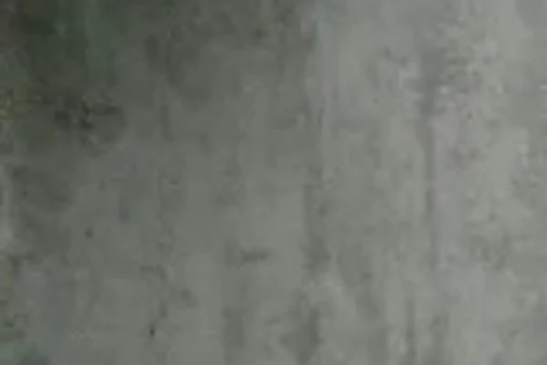
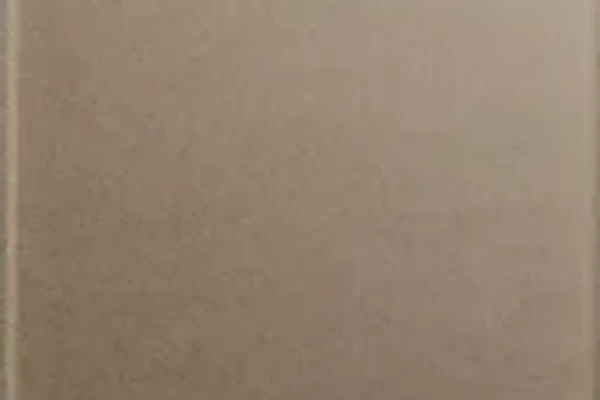

Так выглядят фасады на наших кухнях. Сроки службы ориентировочные, при аккуратной эксплуатации.




Эмаль
Плюсы. Глубокий ровный цвет, любой оттенок по палитре, локально ремонтируется.
Минусы. Заметны следы пальцев на тёмных матовых цветах, скол кромки виден.
Уход. Мягкая ткань, без абразивов.
Срок службы. 10–15 лет. Цена. выше среднего.
МДФ в ПВХ
Плюсы. Много цветов и фрезеровок, влагостойкая плёнка, доступная цена.
Минусы. Плёнка может отходить у плиты и вытяжки, локально не чинится.
Уход. Влажная ткань, не держать горячее у фасада.
Срок службы. 7–12 лет. Цена. средний.
Пластик
Плюсы. Стоек к царапинам и влаге, цвет не выгорает.
Минусы. Ограниченная палитра, торцы заметнее.
Уход. Любое мягкое средство.
Срок службы. 10–15 лет. Цена. средний.
ЛДСП
Плюсы. Самая доступная цена, прочный корпус.
Минусы. Простая форма фасада, торцы боятся воды.
Уход. Сухая или слегка влажная ткань.
Срок службы. 7–10 лет. Цена. доступный.
- 1Кварцевый агломерат: прочный, не боится пятен и горячего. Цена высокая.
- 2Акрил: бесшовный, ремонтируется. Цена выше среднего.
- 3Компакт-ламинат: тонкий, влагостойкий, много декоров. Цена средняя.
- 4HPL (постформинг): доступный вариант. Цена ниже средней.
| Фасад | Цена | Ремонт | Срок |
|---|---|---|---|
| Эмаль | выше среднего | да | 10–15 лет |
| МДФ в ПВХ | средний | нет | 7–12 лет |
| Пластик | средний | нет | 10–15 лет |
| ЛДСП | доступный | нет | 7–10 лет |